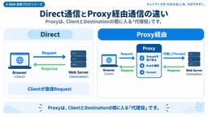
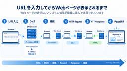
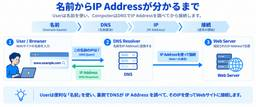
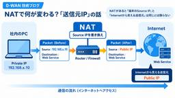
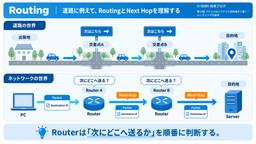
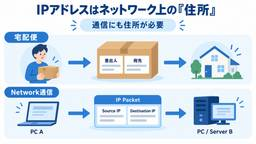

APC 技術ブログ
https://techblog.ap-com.co.jp/
株式会社エーピーコミュニケーションズの技術ブログです。
フィード

【AI活用】BMad-Methodを使って要件定義の整理をやってみた所感 1
1
APC 技術ブログ
はじめに こんにちは。ACS事業部の木戸です。 システム開発における要件の分析や定義の資料を作成する中で生成AIツールを利用して効率を上げようと試みていますが、作成された成果物は想定と異なる場合が多く、生成物の何かしらのレビューと手直しが必要でした。 また、その手直しなどの生成AIツールのコスト消費だけ増えていってしまっているという悪循環に陥ってしまっている感覚がありました。 何かいい方法はないかと考えていた所、BMad-Methodという生成AIツールのフレームワークが存在することを知り、実際に試してみました。 はじめに 1. BMad-Methodとは 2. 事前準備 3. プロジェクトへ…
1日前

第30回 DLPとCASBは何を守る？「外からの脅威」だけではないZIA
APC 技術ブログ
Chapter 2では、URL Filtering、SSL/TLS Inspection、Cloud Firewall、DNS Security、Sandboxなどを見てきました。 ZIAは「危険なものを入れないSecurity」と見えますが、企業が守るべきものはそれだけではありません。 たとえば社員が、 機密Documentを個人Cloud StorageへUploadする 顧客情報をWeb Formへ入力する Organizationが把握していないSaaSを利用する といった場面では、Threatが外から入ってこなくてもRiskが生まれます。 そこで重要になるのがDLP（Data Los…
3日前

第29回 危険なファイルはどう見つける？Sandboxと脅威対策
APC 技術ブログ
WebサイトやCloud ServiceからFileをDownloadするとき、Security製品はどうやって「このFileは危険か」を判断しているのでしょうか。 既に知られているMalwareであれば、HashやSignature、Reputationなど既知の情報を使って判断できます。 では、まだ十分な判定情報がない新しいFileはどうでしょうか。 そこで役立つ考え方がSandboxです。 Sandboxは、不審なFileを隔離されたVirtual Environmentで動かし、そのBehaviorを観察してRiskを判断する仕組みです。 今回は、既知脅威と未知脅威の違いを入口に、Zs…
3日前

第28回 DNS Securityはなぜ必要？Webを見る前から始まる防御
APC 技術ブログ
BrowserでWebサイトを開くとき、最初に行われる処理の一つがDNSによる名前解決です。 第14回では、 名前 → DNS → IP Address → 接続 という流れを見ました。 では、アクセスしようとしているDomain自体がMalware配布SiteやCommand & Controlなどに使われていたらどうでしょうか。 Web通信が始まってから止める方法もありますが、DNS Queryの段階でRiskを判断できれば、Destinationへの接続が始まる前に止められる場合があります。 これがDNS Securityを考える大きな理由です。 まず結論。DNS Securityは「接…
3日前

第27回 Cloud Firewallは普通のFirewallと何が違う？
APC 技術ブログ
Firewallと聞くと、OfficeやData Centerの出口に置かれたApplianceを思い浮かべるかもしれません。 通信を通すか止めるかを判断する重要なSecurity機能ですが、UserがOfficeの外で働き、ApplicationもSaaSやPublic Cloudへ分散すると、 「Firewallはどこに置けばよいのか？」 という問題が出てきます。 ZIAにはCloud上で提供されるFirewall機能があります。 今回は、普通のFirewallとCloud Firewallを機能の優劣で比べるのではなく、通信をどこでControlするArchitectureなのかという視…
3日前

第26回 なぜHTTPS通信を復号するの？SSL Inspectionの考え方 2
APC 技術ブログ
HTTPSは、TLSによって通信内容を暗号化します。 第16回では、それによって第三者が通信の中身を読み取りにくくなることを説明しました。ところが、ここでSecurity製品側には別の課題が生まれます。 通信の中身が見えないなら、その中にMalwareや機密情報が含まれていても確認しにくい。 この課題に対応する考え方が、SSL/TLS Inspectionです。 Zscalerでは一般に「SSL Inspection」と呼ばれることがありますが、実際にはSSL/TLSで保護された通信を対象にします。 まず結論。暗号化された通信を一度確認できる状態にして検査する 一言でいうと、SSL/TLS I…
3日前

第25回 URL Filteringは何を見てWebサイトを許可・遮断している？
APC 技術ブログ
「危険なサイトをブロックする」という説明だけなら、URL Filteringは単純なブラックリストのように見えます。 しかし実際のZIAでは、WebサイトをCategoryで整理し、User・Group・Location・Device・User Riskなどの条件と組み合わせてPolicyを適用することができます。 つまりURL Filteringは、 「このURLが悪いかどうか」だけを見る仕組みではありません。 業務上使ってよいWebサイト、利用を制限したいCategory、Riskが高いSiteなどをOrganizationのRuleに合わせてControlする仕組みです。 今回は、URL…
3日前

第24回 ZIAはどうやって「誰の通信か」を見分ける？
APC 技術ブログ
同じWebサイトへアクセスしていても、ある社員は利用でき、別の社員はブロックされる。 ZIAでは、こうしたユーザーごとのPolicy適用ができます。 では、ZIAはどうやって「この通信は誰のものか」を見分けているのでしょうか。 IP Addressだけを見てUserを判断しているわけではありません。 ZIAでは、UserをServiceへProvisionし、Authenticationなどを通じて通信へIdentityを結び付けることで、User、Group、DepartmentなどをPolicyやLogへ利用できます。 今回は、匿名のTrafficが「誰の通信か分かるTraffic」へ変わ…
3日前

第23回 Zscalerへ通信を送る方法は一つじゃない？転送方式の全体像
APC 技術ブログ
第22回では、ZIAのSecurity機能を使うには、守りたいTrafficをZscalerへ届ける必要があると説明しました。 では、そのTrafficはどうやってZIAへ送るのでしょうか。 答えは一つではありません。 ZIAでは、ユーザー端末、OfficeやBranch、Cloud上のWorkloadなど、Trafficが発生する場所に応じて複数のForwarding方式を選べます。 代表的なのが、Zscaler Client Connector、GRE Tunnel、IPsec Tunnel、PAC Fileです。 今回は設定方法ではなく、「なぜ複数あるのか」「どんな場面で考え方が変わるの…
3日前

第22回 なぜ通信をZscalerへ送る必要があるの？
APC 技術ブログ
「ZIAにはURL FilteringやThreat Protectionがある。それなら、契約して有効にしておけば通信は守られるのでは？」 ここで重要になるのがTraffic Forwardingです。 ZIAのSecurity機能は、対象となる通信がZscalerへ届いて初めて適用できます。 従来のFirewallやProxyでも、Security装置を通らない通信にその装置のPolicyは適用できません。 ZIAではSecurityの処理場所がCloudへ移るため、どの通信を、どうやってZscalerへ届けるかを設計する必要があります。 まず結論。Securityをかけたい通信は「Sec…
3日前

第21回 ZIAはどうやってWeb通信を守っている？
APC 技術ブログ
WebサイトやSaaSを利用するとき、ZIA（Zscaler Internet Access）は通信の途中で何を見ているのでしょうか。 「危険なサイトをブロックする製品」と考えると一部は合っていますが、それだけではZIAの全体像を捉えきれません。 ZIAでは、Zscalerへ転送されたInternet / SaaS通信に対して、誰の通信か、どこへアクセスしようとしているか、組織のポリシーに合っているか、脅威やデータ流出のリスクがないかといった複数の観点から確認します。 Chapter 2では、この一つひとつを掘り下げていきます。まず今回は、ZIAがWeb通信を守る全体像を一枚の地図として整理し…
3日前

第20回 VPNに接続すると何が起きる？ZPAを理解するための前提知識
APC 技術ブログ
在宅勤務で社内Systemを使うとき、「まずVPNへ接続してください」と案内された経験がある方も多いでしょう。 では、VPNへ接続した瞬間、PCの通信は何が変わっているのでしょうか。 VPN（Virtual Private Network）は、Remote Userと企業Networkの間に暗号化された通信経路を作り、離れた場所から社内ResourceへAccessできるようにする代表的なRemote Accessの仕組みです。 今回はZPAとの優劣を決める回ではありません。 まずVPNがなぜ便利なのか、接続するとNetwork上で何が起きるのかを理解し、そのうえで「Networkへつなぐ」と…
7日前

第19回 PACファイルって何？Proxyをどう選んでいるの？
APC 技術ブログ
「Proxyを使う」といっても、Browserはどうやって、 「この通信はProxyへ送る」「これはDirectで送る」 と判断しているのでしょうか。 その答えの一つがPAC（Proxy Auto-Configuration）Fileです。 PAC Fileは、URLやHost Nameなどの条件を見て、Browserへ「どのProxyを使うか」「Directで送るか」を返すRule Bookのような存在です。 前回はProxyを「Clientの代わりにDestinationへ通信する代理役」と整理しました。 今回は、そのProxyを通信ごとにどう選ぶのかという視点でPAC Fileを理解しま…
7日前

第18回 Proxyって結局何？Zscalerとの関係を理解する
APC 技術ブログ
「ZscalerはProxyなの？」 ZIAの話をしていると、よく出てくる疑問です。 Proxyは単なる「通信を中継する箱」ではありません。Userの代わりにDestinationへRequestを送り、そのResponseをUserへ返す“代理役”です。 ZIAもInternet / SaaS通信の途中でRequestを受け取り、PolicyやSecurity処理を行ってDestinationへForwardするため、Proxyの考え方と深く関係します。 今回はまず、Direct通信とProxy経由通信を比べながら、Proxyの基本とZscalerとのつながりを整理します。 まず結論。Pro…
7日前

第17回 証明書って何のためにある？ブラウザーが相手を信頼する仕組み
APC 技術ブログ
HTTPSではTLSによって通信内容が暗号化されます。 では、暗号化する前にBrowserはどうやって、 「今つながろうとしている相手は、本当にこのWebサイトなのか？」 を確認しているのでしょうか。 そこで登場するのがServer Certificate（サーバー証明書）です。 Certificateは、Web Serverが「自分はこのDomainのServerです」と示すための情報で、BrowserはCertificate Authority（CA）との信頼関係を使って、その内容を確認します。 今回はCertificateを「Web上の身分証」として捉え、CAとCertificate C…
7日前

第16回 HTTPSはなぜ安全？TLSの役割をやさしく理解する
APC 技術ブログ
Webサイトを開くと、URLの先頭に https:// と表示されます。 「HTTPSなら安全」と聞いたことはあっても、HTTPと何が違うのか、なぜ途中の人に内容を見られにくくなるのかは意外と分かりにくいものです。 その中心にあるのがTLS（Transport Layer Security）です。 今回は暗号アルゴリズムやHandshakeの細部には踏み込みません。HTTPS通信の中でTLSが何を守っているのかを理解し、後のSSL/TLS Inspectionにつながる土台を作ります。 まず結論。TLSは「通信内容を保護した状態でやり取りする」ための仕組み 一言でいうと、HTTPSはHTTPを…
7日前

第15回 URLを入力してからWebページが表示されるまで
APC 技術ブログ
BrowserにURLを入力してEnterを押すと、数秒でWeb Pageが表示されます。 その裏では、 URL入力 → DNS → 接続 → HTTP Request → HTTP Response → 画面表示 という一連の流れを追います。 この基本Flowは、ZIAが通信のどこに入るのかを理解する土台になります。 まず結論。Web Page表示は「名前解決して、接続して、Requestして、Responseを受け取る」 一言でいうと、Web Pageが表示されるまでには、 URLから接続先を確認する DNSで名前からIP Addressを調べる Web Serverとの通信を開始する B…
7日前

第14回 DNSは何をしている？名前からIPアドレスが分かるまで
APC 技術ブログ
「ブラウザーには www.example.com のような名前を入力するのに、NetworkではIPアドレスを使って通信する。どうやってつながっているの？」 その間をつないでいるのがDNS（Domain Name System）です。 DNSは、人が覚えやすいDomain NameやHost Nameを、通信先として使うIP Addressへ対応付ける仕組みです。 ZscalerでもDNSは何度も登場します。ZPAでPrivate Appへつなぐときも、Internet側のSiteを見るときも、Troubleshootingするときも、「名前から正しいIPを得られているか」は基本的な確認ポイン…
7日前

第13回 NATで何が変わる？「送信元IP」の話
APC 技術ブログ
「PCのIPアドレスを確認すると192.168.x.xなのに、外部ServiceのLogでは別のIPに見える。なぜ？」 その理由の一つがNAT（Network Address Translation）です。 NATは、NetworkをまたぐときにIP Addressを書き換える仕組みです。 企業や家庭のNetworkでは、Private IPを持つ端末がInternetへ出る際に、RouterやFirewallなどで送信元IPをPublic / Global IPへ変換する構成が一般的です。 今回は特に、送信元IPがどう見え方を変えるのかに絞って整理します。 まず結論。NATがあると「端末のI…
7日前

第12回 パケットはどうやって目的地まで届く？ルーティングの基本
APC 技術ブログ
「PCからWebサイトへ通信するとき、どうして目的地まで迷わず届くの？」 Internet通信は、PCとWeb Serverが1本のCableで直接つながっているわけではありません。 実際には、PCからRouterへ、Routerから別のNetworkへ、と複数の区間を通りながら目的地へ近づいていきます。 この「次にどこへ送るか」を決める考え方がRoutingです。 Zscalerを理解するうえでもRoutingは重要です。なぜなら、後のChapterで「通信をZscalerへ送る」という話が何度も登場するからです。 まず結論。Routerは「次の行き先」を選んでいる 一言でいうとRoutin…
7日前

第11回 IPアドレスって、そもそも何を表している？
APC 技術ブログ
「IPアドレスは“ネットワーク上の住所”と聞くけれど、住所なら人やPCをずっと同じように指しているの？」 Zscalerを学んでいると、ログ、Location、通信元、接続先など、さまざまな場面でIPアドレスが登場します。 IPアドレスはネットワークを理解するうえで欠かせませんが、IPアドレス＝人そのもの、端末そのものと覚えると後で混乱します。 今回は、まず「IPアドレスは何を表しているのか」を住所のイメージから整理し、Private IPとGlobal IPの違いまで押さえます。 まず結論。IPアドレスは「通信相手を識別するための住所」 一言でいうと、IPアドレスは、IPネットワーク上で通信…
7日前

【Oracle認定資格】OCI AI Foundations Associate(1Z0-1122-26-JPN)に合格しました。
APC 技術ブログ
はじめに こんにちは、株式会社エーピーコミュニケーションズ クラウド事業部の丸山です。 Oracle Cloud Infrastructure AI Foundations Associate（1Z0-1122-26-JPN）を受験し合格できましたので、資格取得記事としてまとめます。 学習に使ったのは Oracle MyLearn のラーニングパス「Japanese: Become an OCI AI Foundations Associate (2026) 日本語」だけで、受験料も無料でした。 学習から受験まで費用がかからないので、気になっている方は試しやすい資格だと思います。 筆者のプロフ…
8日前
BackstageをMCP Serverに
APC 技術ブログ
はじめに 皆さんこんにちは。エーピーコミュニケーションズ ACS事業部の亀崎です。 突然ですが、実はBackstageはMCP Serverとしても機能するのをご存知でしょうか？ いまの時代、生成AIを利用することが多くなり、以前のようなWeb UIを通じた人間によるアクセスは減っているとも言われています。 こうしたことを踏まえて、BackstageではMCP Serverとしての機能強化を進めています。 www.docswell.com 今回は実際にMCP Serverを有効にするまでのところをご紹介したいと思います。 前提条件 Backstage側のMCP Serverの認証機能は Cli…
9日前
パスキーは破られていないのに突破される——デバイスコードフロー攻撃とEntra IDでの対策
APC 技術ブログ
目次 目次 はじめに パスキーとは サインインの仕組み Entra IDでのパスキー対応について パスキーが突破されること：デバイスコードフロー攻撃 デバイスコードフローとは 攻撃のメカニズム デバイスコードフロー攻撃の対策 Entra IDの条件付きアクセスによるブロック 除外設定が必要なケース Microsoft Entra ID Protectionによる、万が一の不正アクセス検知 結びに ACS 事業部のご紹介 はじめに こんにちは。ACS事業部の折田です。 Microsoft Entra IDでは2026年9月1日から、パスキーがデフォルトの認証方式になりました。SMSや音声による認…
10日前
AGNTCon + MCPCon Japan 2026で聞いた「ID-JAG」という耳慣れない言葉から、MCPの企業向け認可を掘り下げてみた
APC 技術ブログ
目次 目次 はじめに ID-JAGとは 汎用的なフロー 同一エンティティがIdPと認可サーバーを兼ねられるか MCPへの応用: Enterprise-Managed Authorization Keycloakでの実装状況 Microsoftの対応状況（Entra ID / VS Code） API Management × MCP × Entra IDで実現する、もう一つの現実解 Entra IDがID-JAGに対応した場合の使い分けの予測 結びに ACS 事業部のご紹介 はじめに こんにちは。ACS事業部の折田です。 先日、AGNTCon + MCPCon Japan 2026に参加してき…
12日前
Datadog Cloud SIEM for AWS Fundamentalsに合格！
APC 技術ブログ
はじめに 試験概要と出題トピック 試験の基本情報 出題内容 学習方法 Datadog Learning Centerによるハンズオン ドキュメントによる知識の定着 攻略ポイント 出題傾向について 難易度について おわりに はじめに こんにちは、クラウド事業部の横山です。 今回は Datadog の資格のうち、Cloud SIEM for AWS Fundamentalsを受験しましたので、その合格体験記について記載します。 サンドボックス環境でSIEMに触れたことをきっかけに、資格取得を通して、知識の定着と客観的なスキルの証明につながると考え、受験することを決めました。 この記事が、Datad…
12日前
【CrowdStrike】ホストグループの仕様および設定手順
APC 技術ブログ
こんにちは！iTOC事業部0-WANの平松です。 今回は、CrowdStrikeの運用において非常に重要な「ホストグループ」の役割と、具体的な設定手順について解説します。 ホストグループとポリシーの基本 CrowdStrike Falconには、端末（エンドポイント）を保護・管理するための多様なポリシーが存在します。これらのポリシーを端末に適用するには、まず対象の端末を「ホストグループ（Host Group）」に所属させる必要があります。 ホストグループに端末を割り当てない限り、各ポリシーを適用することはできません。 ポリシー適用の基盤となるため、ホストグループの正しい設計と設定が運用の第一歩…
13日前
第10回 ここまで分かればZscalerの基本はOK ― 全体像を一枚につなげる
APC 技術ブログ
ここまでにZero Trust、ZIA、ZPA、Service Edge、Client Connector、Identityなどが登場しました。 第10回はChapter 0のまとめです。新しい用語を増やさず、第1～9回の要素を「UserからApplicationまで」という1本の流れにつなげます。 まず結論。すべては「Userを必要なApplicationへ安全につなぐ」ためにある Zscalerの基本を一言でまとめるなら、 UserやDeviceを確認し、Policyに基づいて、必要なApplicationへ安全にAccessさせる という考え方です。 その全体を支えるのがZero Tru…
13日前
第9回 Zscalerはどうやって「あなた」を判断している？
APC 技術ブログ
「同じWebサイトや社内システムにアクセスしているのに、人によって許可されたり、止められたりするのはなぜ？」 Zscalerは送信元IP Addressだけを見てUserを判断するわけではありません。 Zero Trustでは、誰が・どのDeviceから・どこから・何へAccessするのかといったContextを組み合わせ、Policyに基づいて判断します。 まず結論。「あなた」は1つの情報だけでは決まらない Zscalerは、 Identity、Device、Location、ApplicationなどのContextを組み合わせ、PolicyでAccessを判断する という考え方を取ります…
13日前
第8回 Client Connectorって何をしているの？
APC 技術ブログ
「PCに入っているClient Connectorって、結局何をしているの？」 Zscaler Client ConnectorはBackgroundで動作するため、Userが普段その存在を強く意識しないこともあります。 理解するときは、単なるVPN Clientではなく、端末上で通信を適切なZscaler Serviceへ導く“交通整理役”と考えると分かりやすくなります。 まず結論。Client Connectorは端末とZscalerをつなぐ入口 一言でいうと、Zscaler Client Connectorは、UserのPCやSmart Device上で動作し、構成やPolicyに応じて…
13日前